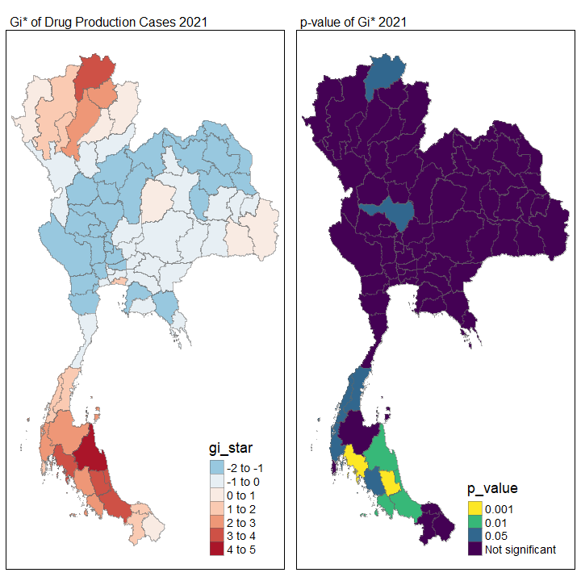

pacman::p_load(sf, tidyverse, tmap, sfdep)02 Take Home Exercise 2
Application of Geospatial Analysis Methods to Discover Thailand Drug Abuse at the Province Level
1 Overview
This exercise is done with reference to the Exercise Outline provided by the instructor
1.1 Context
(Copied from Exercise):
Drug abuse is associated with significant negative health, financial and social consequences. Yet, illicit drug consumption remains highly prevalent and continues to be a growing problem worldwide. In 2021, 1 in 17 people aged 15–64 in the world had used a drug in the past 12 months. Notwithstanding population growth, the estimated number of drug users grew from 240 million in 2011 to 296 million in 2021.
The geopolitics of Thailand which is near the Golden Triangle of Indochina, the largest drug production site in Asia, and the constant transportation infrastructure development made Thailand became market and transit routes for drug trafficking to the third countries.
In Thailand, drug abuse is one of the major social issue. There are about 2.7 million youths using drugs in Thailand. Among youths aged between 15 and 19 years, there are about 300,000 who have needs for drug treatment. Most of Thai youths involved with drugs are vocational-school students, which nearly doubles in number compared to secondary-school students.
1.2 Objectives
The main objectives of this exercise are to determine:
- If the key indicators of drug abuse of Thailand are independent from space.
- If the indicators of drug abuse is indeed spatial dependent, then, we would like to detect where are the clusters and outliers, and the hotspots.
- Last but not least, we are also interested to investigate how the observations above evolve over time.
1.3 Data
For the purpose of this take-home exercise, two data sets shall be used, they are:
Thailand Drug Offenses [2017-2022] at Kaggle.
Thailand - Subnational Administrative Boundaries at HDX. You are required to use the province boundary data set.
2 Importing the Necessary and Data Cleaning
2.1 Importing the packages
2.2 Importing the data sets
# Read the administrative boundaries (province level)
# Keep only the columns "ADM1_EN", "ADM1_TH", and "ADM1_PCODE"
province_sf <- st_read(dsn="data/geospatial/tha_adm_rtsd_itos_20210121_shp", layer = "tha_admbnda_adm1_rtsd_20220121") %>%
select(c(3:5))
# Read the drug abuse data set
drug <- read_csv("data/aspatial/thai_drug_offenses_2017_2022.csv",
show_col_types = FALSE)2.3 Joining statistical data set to geospatial data set
Now let us do a join of the drug abuse data set with the admin boundary layer, so that we can map the drug abuse data spatially.
To do so, we can do a join using the common province names between two data sets. There are two ways to do the join:
- using the English province name
- using the Thai province name
The code chunk belows joins using the English province name
# Join both data sets by common province names (English)
# to form a geospatial data containing drug abuse statistics
drug_sf <- left_join(province_sf, drug, by = c("ADM1_EN" = "province_en"))Looking at the results, we realise that the number of observations have dropped, meaning some drug abuse data is lost. This is likely due to mismatched names, perhaps due a non-standard translation of the province names.
As seen below, originally, there are 7392 rows of data in drug, this has fell to 7202 rows of data after the join in drug_sf.
Let us do a join using the Thai name instead.
# Join both data sets by common province names (Thai)
# to form a geospatial data containing drug abuse statistics
drug_sf <- left_join(province_sf, drug, by = c("ADM1_TH" = "province_th")) %>% select (c(1:6))Looking at this result, we can see that no data is lost, so let us continue with this method (joining using common Thai province names) instead.
2.4 Quick View of the Data
# code chunk eval is currently set to false, no output will be shown
# Quick view of the province boundaries layer
tmap_mode("view")
tmap_options(max.categories = 77)
qtm(province_sf, fill = "ADM1_EN")Referring to the Take-Home-Exercise 2 Source, which include a pre-prepared map of the drug use cases over the years (as shown below), we can see that drug abuse cases appears to be most frequent in the fiscal years 2019 and 2021.
This visualisation, however, does not separate the different types of drug abuse cases recorded within the drug data set. In fact, we can use the code chunk below to see what are the different types of drug abuse cases:
unique(drug$types_of_drug_offenses)There are a total of 16 types of different drug abuse offences.
[1] “drug_use_cases”
[2] “suspects_in_drug_use_cases”
[3] “possession_cases”
[4] “suspects_in_possession_cases”
[5] “possession_with_intent_to_distribute_cases”
[6] “suspects_in_possession_with_intent_to_distribute_cases” [7] “trafficking_cases”
[8] “suspects_in_trafficking_cases”
[9] “production_cases”
[10] “suspects_in_production_cases”
[11] “import_cases”
[12] “suspects_in_import_cases”
[13] “export_cases”
[14] “suspects_in_export_cases”
[15] “conspiracy_cases”
[16] “suspects_in_conspiracy_cases”
Personally, I am interested in the drug production cases, so let us focus on that for this study, to determine the patterns of drug production cases (item number 9 “production_cases”)
study_drug_offences <- drug_sf %>%
filter( types_of_drug_offenses %in% ("production_cases"))
drug_2017 <- study_drug_offences %>% filter( fiscal_year == "2017")
drug_2018 <- study_drug_offences %>% filter( fiscal_year == "2018")
drug_2019 <- study_drug_offences %>% filter( fiscal_year == "2019")
drug_2020 <- study_drug_offences %>% filter( fiscal_year == "2020")
drug_2021 <- study_drug_offences %>% filter( fiscal_year == "2021")
drug_2022 <- study_drug_offences %>% filter( fiscal_year == "2022")As expected, we see 77 observations for each fiscal year, confirming that no observations have been lost in our data preparation.
Now let us do a quick plot of the data:
tmap_mode("plot")
tmap_options(max.categories = 77)
m2017 <- qtm(drug_2017, fill = "no_cases",
fill.title = "Drug production cases 2017")
m2018 <- qtm(drug_2018, fill = "no_cases",
fill.title = "Drug production cases 2018")
m2019 <- qtm(drug_2019, fill = "no_cases",
fill.title = "Drug production cases 2019")
m2020 <- qtm(drug_2020, fill = "no_cases",
fill.title = "Drug production cases 2020")
m2021 <- qtm(drug_2021, fill = "no_cases",
fill.title = "Drug production cases 2021")
m2022 <- qtm(drug_2022, fill = "no_cases",
fill.title = "Drug production cases 2022")
tmap_arrange(m2017,m2018,m2019,m2020,m2021,m2022, ncol = 3, nrow = 2)2.5 Data Export
Now that we have an overview of what data we are working with, let us export the data set.
write_rds(drug_2017, "data/rds/drug_production_cases_2017")
write_rds(drug_2018, "data/rds/drug_production_cases_2018")
write_rds(drug_2019, "data/rds/drug_production_cases_2019")
write_rds(drug_2020, "data/rds/drug_production_cases_2020")
write_rds(drug_2021, "data/rds/drug_production_cases_2021")
write_rds(drug_2022, "data/rds/drug_production_cases_2022")3 Main Analysis
3.1 Importing the RDS Data sets
drug_2017 <- read_rds("data/rds/drug_production_cases_2017")
drug_2018 <- read_rds("data/rds/drug_production_cases_2018")
drug_2019 <- read_rds("data/rds/drug_production_cases_2019")
drug_2020 <- read_rds("data/rds/drug_production_cases_2020")
drug_2021 <- read_rds("data/rds/drug_production_cases_2021")
drug_2022 <- read_rds("data/rds/drug_production_cases_2022")4 Global Measures of Spatial Autocorrelation
Now, let us do a global spatial autocorrelation test to determine if there are signs of clusterings, and if there are, whether these are positive clusters (high-high) or negative clusters (low-low).
4.1 Computing Weight Matrix (Queens)
wm_2017 <- drug_2017 %>%
mutate( nb = st_contiguity(geometry),
wt = st_weights(nb,
style = "W",
allow_zero = TRUE),
.before = 1)
Note
There exist a province without any neighbours – Phuket – which is an island province detached from the other land masses. We will therefore try to manually redefine Phuket’s immediate neighbour(s) (Queen’s Method), which is Phang Nga (or “Phangnga” in our data set) based on a quick google search.
We will then assign the relative weights to 1. At the same time, we have to update the neighbours of Phangna to include Phuket, and update its relative weights.
Manually Update the Neighbours and Weights for Phuket and Phangnga
# Identify the row where ADM1_EN == "Phuket"
index_phuket <- which(wm_2017$ADM1_EN == "Phuket")
index_phangnga <- which(wm_2017$ADM1_EN == "Phangnga")
# Replace the value of 'nb' and 'wt' columns for Phuket
wm_2017$nb[index_phuket] <- as.integer(66) # index of Phangnga is 66
wm_2017$wt[index_phuket] <- 1
# Replace the value of 'nb' and 'wt' columns for Phang Nga
wm_2017$nb[index_phangnga] <- list(c(as.integer(65),
as.integer(67),
as.integer(68),
as.integer(69))) # index of Phuket is 67
wm_2017$wt[index_phangnga] <- list(c(0.25, 0.25, 0.25, 0.25))Copy Weight Matrix to Data sets for All Fiscal Years
Given that the geometry of all other sf are the same, let us just copy and paste the weight matrix onto all the other data sets
# Copy the weight matrix
weights_df <- wm_2017 %>% select(ADM1_EN, nb, wt) %>% st_drop_geometry()
# Apply to all other data sf
wm_2018 <- left_join(drug_2018, weights_df, by = "ADM1_EN") %>%
select ("nb", "wt", "ADM1_EN", "ADM1_TH", "ADM1_PCODE", "fiscal_year", "types_of_drug_offenses", "no_cases")
wm_2019 <- left_join(drug_2019, weights_df, by = "ADM1_EN") %>%
select ("nb", "wt", "ADM1_EN", "ADM1_TH", "ADM1_PCODE", "fiscal_year", "types_of_drug_offenses", "no_cases")
wm_2020 <- left_join(drug_2020, weights_df, by = "ADM1_EN") %>%
select ("nb", "wt", "ADM1_EN", "ADM1_TH", "ADM1_PCODE", "fiscal_year", "types_of_drug_offenses", "no_cases")
wm_2021 <- left_join(drug_2021, weights_df, by = "ADM1_EN") %>%
select ("nb", "wt", "ADM1_EN", "ADM1_TH", "ADM1_PCODE", "fiscal_year", "types_of_drug_offenses", "no_cases")
wm_2022 <- left_join(drug_2022, weights_df, by = "ADM1_EN") %>%
select ("nb", "wt", "ADM1_EN", "ADM1_TH", "ADM1_PCODE", "fiscal_year", "types_of_drug_offenses", "no_cases")4.2 Global Moran’s I Test (using 100 Monte Carlo Simulations)
Let us now test for the spatial autocorrelation globally, to see if there are strong signs of clustering.
Null Hypothesis (H0):
There is no spatial autocorrelation in the data. The spatial distribution of the drug production (number of cases) is random.
Alternative Hypothesis (H1):
There is significant spatial autocorrelation in the data. The spatial distribution of the variable (number of cases) is not random.
Let us set the confidence level as 95%. Our alpha-value, is therefore, equal to 0.05.
set.seed(1234)
calculate_global_moran_perm <- function(input) {
global_moran_perm(input$no_cases,
input$nb,
input$wt,
nsim = 99)
}
calculate_global_moran_perm(wm_2017)
Monte-Carlo simulation of Moran I
data: x
weights: listw
number of simulations + 1: 100
statistic = 0.5551, observed rank = 100, p-value < 2.2e-16
alternative hypothesis: two.sidedcalculate_global_moran_perm(wm_2018)
Monte-Carlo simulation of Moran I
data: x
weights: listw
number of simulations + 1: 100
statistic = 0.51008, observed rank = 100, p-value < 2.2e-16
alternative hypothesis: two.sidedcalculate_global_moran_perm(wm_2019)
Monte-Carlo simulation of Moran I
data: x
weights: listw
number of simulations + 1: 100
statistic = 0.39015, observed rank = 100, p-value < 2.2e-16
alternative hypothesis: two.sidedcalculate_global_moran_perm(wm_2020)
Monte-Carlo simulation of Moran I
data: x
weights: listw
number of simulations + 1: 100
statistic = 0.33137, observed rank = 100, p-value < 2.2e-16
alternative hypothesis: two.sidedcalculate_global_moran_perm(wm_2021)
Monte-Carlo simulation of Moran I
data: x
weights: listw
number of simulations + 1: 100
statistic = 0.39668, observed rank = 100, p-value < 2.2e-16
alternative hypothesis: two.sidedcalculate_global_moran_perm(wm_2022)
Monte-Carlo simulation of Moran I
data: x
weights: listw
number of simulations + 1: 100
statistic = 0.42722, observed rank = 100, p-value < 2.2e-16
alternative hypothesis: two.sided4.3 Test Conclusion
Based on the results of the Global Moran I Test using 100 Monte Carlo simulations, we observed that the p-values for all tests were less than the alpha value of 0.05. Therefore, we reject the null hypothesis and conclude that there is significant spatial autocorrelation in the data. The spatial distribution of drug production cases is not random but rather exhibits clustering patterns. This indicates strong spatial dependencies among the cases, which should be considered in further analysis and decision-making.
Furthermore, the Moran I statistic value of all the tests are positive, which indicates signs of clustering. We can therefore conclude that clustering occurs, whether is it high-high, or low-low clusters.
5 Local Measures of Spatial Autocorrelation
Now, since we can determine that the indicators of drug abuse, in this case drug production, are not spatially independent, and they in fact shows signs of spatial dependency and clustering. We would like to detect where these clusters and outliers are, and also find out the hotspots.
We will therefore conduct a Local Moran’s I Test for all the years, then followed by a map visualisation of the test results.
5.1 Weight Matrix (Queens)
The same weight matrix generated previously can be reused directly here. So we will not recompute them.
5.2 Local Moran’s I Test (100 Monte Carlo Simulations)
LISA, or rather, the local indicators of spatial autocorrelation, will be used.
lisa_2017 <- wm_2017 %>%
mutate(local_moran = local_moran(no_cases, nb, wt, nsim = 99),
.before = 1) %>%
unnest(local_moran)
lisa_2018 <- wm_2018 %>%
mutate(local_moran = local_moran(no_cases, nb, wt, nsim = 99),
.before = 1) %>%
unnest(local_moran)
lisa_2019 <- wm_2019 %>%
mutate(local_moran = local_moran(no_cases, nb, wt, nsim = 99),
.before = 1) %>%
unnest(local_moran)
lisa_2020 <- wm_2020 %>%
mutate(local_moran = local_moran(no_cases, nb, wt, nsim = 99),
.before = 1) %>%
unnest(local_moran)
lisa_2021 <- wm_2021 %>%
mutate(local_moran = local_moran(no_cases, nb, wt, nsim = 99),
.before = 1) %>%
unnest(local_moran)
lisa_2022 <- wm_2022 %>%
mutate(local_moran = local_moran(no_cases, nb, wt, nsim = 99),
.before = 1) %>%
unnest(local_moran)5.3 Visualising LISA Statistics on a Map
Let us visualise the Local Moran’s I as well as the respective p-values for each provinces for every year.
tmap_mode("plot")
m2017 <- tm_shape(lisa_2017) +
tm_fill( "ii")+
tm_borders(alpha = 0.5)+
tm_view(set.zoom.limits = c(6,8))+
tm_layout(
main.title = "Local Moran's I of Drug Production Cases 2017",
main.title.size = 0.8
)
m2017_p <- tm_shape(lisa_2017) +
tm_fill( "p_ii",
breaks = c(0,0.001,0.01,0.05,1),
labels = c("0.001","0.01","0.05","Not significant"))+
tm_borders(alpha = 0.5)+
tm_view(set.zoom.limits = c(6,8))+
tm_layout(
main.title = "p-value of Local Moran I's of Drug Production Cases 2017",
main.title.size = 0.8
)
m2018 <- tm_shape(lisa_2018) +
tm_fill( "ii")+
tm_borders(alpha = 0.5)+
tm_view(set.zoom.limits = c(6,8))+
tm_layout(
main.title = "Local Moran's I of Drug Production Cases 2018",
main.title.size = 0.8
)
m2018_p <- tm_shape(lisa_2018) +
tm_fill( "p_ii",
breaks = c(0,0.001,0.01,0.05,1),
labels = c("0.001","0.01","0.05","Not significant"))+
tm_borders(alpha = 0.5)+
tm_view(set.zoom.limits = c(6,8))+
tm_layout(
main.title = "p-value of Local Moran I's of Drug Production Cases 2018",
main.title.size = 0.8
)
m2019 <- tm_shape(lisa_2019) +
tm_fill( "ii")+
tm_borders(alpha = 0.5)+
tm_view(set.zoom.limits = c(6,8))+
tm_layout(
main.title = "Local Moran's I of Drug Production Cases 2019",
main.title.size = 0.8
)
m2019_p <- tm_shape(lisa_2019) +
tm_fill( "p_ii",
breaks = c(0,0.001,0.01,0.05,1),
labels = c("0.001","0.01","0.05","Not significant"))+
tm_borders(alpha = 0.5)+
tm_view(set.zoom.limits = c(6,8))+
tm_layout(
main.title = "p-value of Local Moran I's of Drug Production Cases 2019",
main.title.size = 0.8
)
m2020 <- tm_shape(lisa_2020) +
tm_fill( "ii")+
tm_borders(alpha = 0.5)+
tm_view(set.zoom.limits = c(6,8))+
tm_layout(
main.title = "Local Moran's I of Drug Production Cases 2020",
main.title.size = 0.8
)
m2020_p <- tm_shape(lisa_2020) +
tm_fill( "p_ii",
breaks = c(0,0.001,0.01,0.05,1),
labels = c("0.001","0.01","0.05","Not significant"))+
tm_borders(alpha = 0.5)+
tm_view(set.zoom.limits = c(6,8))+
tm_layout(
main.title = "p-value of Local Moran I's of Drug Production Cases 2020",
main.title.size = 0.8
)
m2021 <- tm_shape(lisa_2021) +
tm_fill( "ii")+
tm_borders(alpha = 0.5)+
tm_view(set.zoom.limits = c(6,8))+
tm_layout(
main.title = "Local Moran's I of Drug Production Cases 2021",
main.title.size = 0.8
)
m2021_p <- tm_shape(lisa_2021) +
tm_fill( "p_ii",
breaks = c(0,0.001,0.01,0.05,1),
labels = c("0.001","0.01","0.05","Not significant"))+
tm_borders(alpha = 0.5)+
tm_view(set.zoom.limits = c(6,8))+
tm_layout(
main.title = "p-value of Local Moran I's of Drug Production Cases 2021",
main.title.size = 0.8
)
m2022 <- tm_shape(lisa_2022) +
tm_fill( "ii")+
tm_borders(alpha = 0.5)+
tm_view(set.zoom.limits = c(6,8))+
tm_layout(
main.title = "Local Moran's I of Drug Production Cases 2022",
main.title.size = 0.8
)
m2022_p <- tm_shape(lisa_2022) +
tm_fill( "p_ii",
breaks = c(0,0.001,0.01,0.05,1),
labels = c("0.001","0.01","0.05","Not significant"))+
tm_borders(alpha = 0.5)+
tm_view(set.zoom.limits = c(6,8))+
tm_layout(
main.title = "p-value of Local Moran I's of Drug Production Cases 2022",
main.title.size = 0.8
)Now, that was just a quick view of Local Moran I test results.
tmap_arrange(m2017,m2017_p)
tmap_arrange(m2018,m2018_p)
tmap_arrange(m2019,m2019_p)
tmap_arrange(m2020,m2020_p)
tmap_arrange(m2021,m2021_p)
tmap_arrange(m2022,m2022_p)5.4 LISA Maps
Let us filter out provinces where there are strong signs of clustering (where p-value < 0.05), and plot them out.
tmap_mode("plot")
lisa_2017_sig <- lisa_2017 %>%
filter(p_ii_sim < 0.05)
lisa_2018_sig <- lisa_2018 %>%
filter(p_ii_sim < 0.05)
lisa_2019_sig <- lisa_2019 %>%
filter(p_ii_sim < 0.05)
lisa_2020_sig <- lisa_2020 %>%
filter(p_ii_sim < 0.05)
lisa_2021_sig <- lisa_2021 %>%
filter(p_ii_sim < 0.05)
lisa_2022_sig <- lisa_2021 %>%
filter(p_ii_sim < 0.05)
tm_shape(lisa_2017) +
tm_polygons() +
tm_borders(alpha = 0.5) +
tm_shape(lisa_2017_sig) +
tm_fill("median") +
tm_borders(alpha = 0.4) +
tm_layout(main.title = "LISA Map 2017 Drug Production Cases", main.title.size = 0.8)
tm_shape(lisa_2018) +
tm_polygons() +
tm_borders(alpha = 0.5) +
tm_shape(lisa_2018_sig) +
tm_fill("median") +
tm_borders(alpha = 0.4) +
tm_layout(main.title = "LISA Map 2018 Drug Production Cases", main.title.size = 0.8)
tm_shape(lisa_2019) +
tm_polygons() +
tm_borders(alpha = 0.5) +
tm_shape(lisa_2019_sig) +
tm_fill("median") +
tm_borders(alpha = 0.4) +
tm_layout(main.title = "LISA Map 2019 Drug Production Cases", main.title.size = 0.8)
tm_shape(lisa_2020) +
tm_polygons() +
tm_borders(alpha = 0.5) +
tm_shape(lisa_2020_sig) +
tm_fill("median") +
tm_borders(alpha = 0.4) +
tm_layout(main.title = "LISA Map 2020 Drug Production Cases", main.title.size = 0.8)
tm_shape(lisa_2021) +
tm_polygons() +
tm_borders(alpha = 0.5) +
tm_shape(lisa_2021_sig) +
tm_fill("median") +
tm_borders(alpha = 0.4) +
tm_layout(main.title = "LISA Map 2021 Drug Production Cases", main.title.size = 0.8)
tm_shape(lisa_2022) +
tm_polygons() +
tm_borders(alpha = 0.5) +
tm_shape(lisa_2022_sig) +
tm_fill("median") +
tm_borders(alpha = 0.4) +
tm_layout(main.title = "LISA Map 2022 Drug Production Cases", main.title.size = 0.8)5.5 LISA Test Conclusion
Comparing the LISA Maps over the years, it is clear that the southern provinces of Thailand, specifically around the provinces such as Nakhon Si Thammarat, Krabi, Trang, Phatthalung, Songkla, is likely an ongoing hotspot (to be determined) for drug production as they have remained a high-high cluster consistently throughout the years.
In contrast, the mid-western provinces, specifically around the provinces such as Nakhon Sawan, is more of a coldspot (to be determined) for drug production, where the area has a low-low clusters of drug production cases.
An interesting observation is in year 2020, where the province Ranong was a low-high outlier–where itself had a low count drug production cases while its surrounding provinces had high counts of such cases–but in the subsequent years (2021, 2022), it turned into a high-high cluster, likely indicating the spread of drug production from its neighbouring states.
Another less interesting observation is the province of Phrase in 2017, and the province of Sakon Nakhon in 2020, which both exhibited a high-low outlier, showing that their drug production cases is higher than their neighbours. However, the trends do not continue into subsequent years, so not much conclusions can be drawn.
No definitive conclusion can be made about the hot spots and cold spots yet, however, as LISA is a localised measure that only considers the number of cases of each province relative to its immediate neighbours, and it does not represent a absolutely high or low values on a larger, regional scale; it only shows signs of clusterings and outliers.
6 Hot Spot and Cold Spot Area Analysis (HCSA)
6.1 Computing Inversed Distance Weight Matrix (Queens)
Let us reuse the neighbours computed in our previous weight matrix (followed by the manual edit), then compute the new inversed distance weight matrix based on that. Note that our coordinates system is still using WGS84, therefore there might be small inaccuracies. However, since the provinces are relatively large, the inaccuracies should be fine (I hope.)
nb_list <- wm_2017$nb
wm_2017_idw <- drug_2017 %>%
mutate( nb = nb_list, # using the previously used neighbour column
wt = st_inverse_distance(nb, geometry, scale = 1, alpha = 1),
.before = 1 )
wm_2018_idw <- drug_2018 %>%
mutate( nb = nb_list, # using the previously used neighbour column
wt = st_inverse_distance(nb, geometry, scale = 1, alpha = 1),
.before = 1 )
wm_2019_idw <- drug_2019 %>%
mutate( nb = nb_list, # using the previously used neighbour column
wt = st_inverse_distance(nb, geometry, scale = 1, alpha = 1),
.before = 1 )
wm_2020_idw <- drug_2020 %>%
mutate( nb = nb_list, # using the previously used neighbour column
wt = st_inverse_distance(nb, geometry, scale = 1, alpha = 1),
.before = 1 )
wm_2021_idw <- drug_2021 %>%
mutate( nb = nb_list, # using the previously used neighbour column
wt = st_inverse_distance(nb, geometry, scale = 1, alpha = 1),
.before = 1 )
wm_2022_idw <- drug_2022 %>%
mutate( nb = nb_list, # using the previously used neighbour column
wt = st_inverse_distance(nb, geometry, scale = 1, alpha = 1),
.before = 1 )6.2 Computing Local Gi* statistics
HCSA_2017 <- wm_2017_idw %>%
mutate(local_Gi = local_gstar_perm(
no_cases, nb, wts, nsim = 99),
.before = 1) %>%
unnest(local_Gi)
HCSA_2018 <- wm_2018_idw %>%
mutate(local_Gi = local_gstar_perm(
no_cases, nb, wts, nsim = 99),
.before = 1) %>%
unnest(local_Gi)
HCSA_2019 <- wm_2019_idw %>%
mutate(local_Gi = local_gstar_perm(
no_cases, nb, wts, nsim = 99),
.before = 1) %>%
unnest(local_Gi)
HCSA_2020 <- wm_2020_idw %>%
mutate(local_Gi = local_gstar_perm(
no_cases, nb, wts, nsim = 99),
.before = 1) %>%
unnest(local_Gi)
HCSA_2021 <- wm_2021_idw %>%
mutate(local_Gi = local_gstar_perm(
no_cases, nb, wts, nsim = 99),
.before = 1) %>%
unnest(local_Gi)
HCSA_2022 <- wm_2022_idw %>%
mutate(local_Gi = local_gstar_perm(
no_cases, nb, wts, nsim = 99),
.before = 1) %>%
unnest(local_Gi)
# Let us get a preview of the results (using 2017 as an example)
HCSA_2017Simple feature collection with 77 features and 18 fields
Geometry type: MULTIPOLYGON
Dimension: XY
Bounding box: xmin: 97.34336 ymin: 5.613038 xmax: 105.637 ymax: 20.46507
Geodetic CRS: WGS 84
# A tibble: 77 × 19
gi_star cluster e_gi var_gi std_dev p_value p_sim p_folded_sim skewness
<dbl> <fct> <dbl> <dbl> <dbl> <dbl> <dbl> <dbl> <dbl>
1 -0.465 High 0.0151 0.000133 -0.667 0.505 0.66 0.33 1.84
2 0.0453 Low 0.00986 0.000352 0.212 0.832 0.44 0.22 3.11
3 -0.260 Low 0.0114 0.000179 -0.157 0.875 0.9 0.45 2.38
4 -0.485 Low 0.0154 0.000203 -0.575 0.565 0.84 0.42 1.03
5 -1.00 Low 0.0126 0.000120 -0.978 0.328 0.2 0.1 1.19
6 -0.852 Low 0.0100 0.000163 -0.723 0.470 0.04 0.02 2.10
7 -1.05 Low 0.0117 0.000123 -0.876 0.381 0.24 0.12 1.38
8 -0.929 Low 0.00892 0.0000947 -0.821 0.411 0.04 0.02 2.02
9 -0.832 Low 0.0102 0.000183 -0.678 0.498 0.04 0.02 2.36
10 -0.792 Low 0.0134 0.000251 -0.677 0.498 0.64 0.32 2.12
# ℹ 67 more rows
# ℹ 10 more variables: kurtosis <dbl>, nb <nb>, wt <list>, ADM1_EN <chr>,
# ADM1_TH <chr>, ADM1_PCODE <chr>, fiscal_year <dbl>,
# types_of_drug_offenses <chr>, no_cases <dbl>, geometry <MULTIPOLYGON [°]>6.3 Visualising Gi* Statistics on a Map
Let us do a quick visualisation of the computed HCSA. I have changed the colour palettes this time to reflect the statistics more intuitively.
tmap_mode("plot")
mHCSA_2017 <- tm_shape(HCSA_2017) +
tm_fill("gi_star",
palette="-RdBu") +
tm_borders(alpha = 0.5) +
tm_view(set.zoom.limits = c(6,8)) +
tm_layout(main.title = "Gi* of Drug Production Cases 2017",
main.title.size = 0.8)
mHCSA_2017_p <- tm_shape(HCSA_2017) +
tm_fill("p_value",
breaks = c(0, 0.001, 0.01, 0.05, 1),
labels = c("0.001", "0.01", "0.05", "Not significant"),
palette = "-viridis") +
tm_borders(alpha = 0.5) +
tm_layout(main.title = "p-value of Gi* 2017",
main.title.size = 0.8)
mHCSA_2018 <- tm_shape(HCSA_2018) +
tm_fill("gi_star",
palette="-RdBu") +
tm_borders(alpha = 0.5) +
tm_view(set.zoom.limits = c(6,8)) +
tm_layout(main.title = "Gi* of Drug Production Cases 2018",
main.title.size = 0.8)
mHCSA_2018_p <- tm_shape(HCSA_2018) +
tm_fill("p_value",
breaks = c(0, 0.001, 0.01, 0.05, 1),
labels = c("0.001", "0.01", "0.05", "Not significant"),
palette = "-viridis") +
tm_borders(alpha = 0.5) +
tm_layout(main.title = "p-value of Gi* 2018",
main.title.size = 0.8)
mHCSA_2019 <- tm_shape(HCSA_2019) +
tm_fill("gi_star",
palette="-RdBu") +
tm_borders(alpha = 0.5) +
tm_view(set.zoom.limits = c(6,8)) +
tm_layout(main.title = "Gi* of Drug Production Cases 2019",
main.title.size = 0.8)
mHCSA_2019_p <- tm_shape(HCSA_2019) +
tm_fill("p_value",
breaks = c(0, 0.001, 0.01, 0.05, 1),
labels = c("0.001", "0.01", "0.05", "Not significant"),
palette = "-viridis") +
tm_borders(alpha = 0.5) +
tm_layout(main.title = "p-value of Gi* 2019",
main.title.size = 0.8)
mHCSA_2020 <- tm_shape(HCSA_2020) +
tm_fill("gi_star",
palette="-RdBu") +
tm_borders(alpha = 0.5) +
tm_view(set.zoom.limits = c(6,8)) +
tm_layout(main.title = "Gi* of Drug Production Cases 2020",
main.title.size = 0.8)
mHCSA_2020_p <- tm_shape(HCSA_2020) +
tm_fill("p_value",
breaks = c(0, 0.001, 0.01, 0.05, 1),
labels = c("0.001", "0.01", "0.05", "Not significant"),
palette = "-viridis") +
tm_borders(alpha = 0.5) +
tm_layout(main.title = "p-value of Gi* 2020",
main.title.size = 0.8)
mHCSA_2021 <- tm_shape(HCSA_2021) +
tm_fill("gi_star",
palette="-RdBu") +
tm_borders(alpha = 0.5) +
tm_view(set.zoom.limits = c(6,8)) +
tm_layout(main.title = "Gi* of Drug Production Cases 2021",
main.title.size = 0.8)
mHCSA_2021_p <- tm_shape(HCSA_2021) +
tm_fill("p_value",
breaks = c(0, 0.001, 0.01, 0.05, 1),
labels = c("0.001", "0.01", "0.05", "Not significant"),
palette = "-viridis") +
tm_borders(alpha = 0.5) +
tm_layout(main.title = "p-value of Gi* 2021",
main.title.size = 0.8)
mHCSA_2022 <- tm_shape(HCSA_2022) +
tm_fill("gi_star",
palette="-RdBu") +
tm_borders(alpha = 0.5) +
tm_view(set.zoom.limits = c(6,8)) +
tm_layout(main.title = "Gi* of Drug Production Cases 2022",
main.title.size = 0.8)
mHCSA_2022_p <- tm_shape(HCSA_2022) +
tm_fill("p_value",
breaks = c(0, 0.001, 0.01, 0.05, 1),
labels = c("0.001", "0.01", "0.05", "Not significant"),
palette = "-viridis") +
tm_borders(alpha = 0.5) +
tm_layout(main.title = "p-value of Gi* 2022",
main.title.size = 0.8)tmap_arrange(mHCSA_2017, mHCSA_2017_p)
tmap_arrange(mHCSA_2018, mHCSA_2018_p)
tmap_arrange(mHCSA_2019, mHCSA_2019_p)
tmap_arrange(mHCSA_2020, mHCSA_2020_p)
tmap_arrange(mHCSA_2021, mHCSA_2021_p)
tmap_arrange(mHCSA_2022, mHCSA_2022_p)
6.4 HCSA Maps
tmap_mode("plot")
HCSA_2017_sig <- HCSA_2017 %>%
filter(p_sim < 0.05)
HCSA_2018_sig <- HCSA_2018 %>%
filter(p_sim < 0.05)
HCSA_2019_sig <- HCSA_2019 %>%
filter(p_sim < 0.05)
HCSA_2020_sig <- HCSA_2020 %>%
filter(p_sim < 0.05)
HCSA_2021_sig <- HCSA_2021 %>%
filter(p_sim < 0.05)
HCSA_2022_sig <- HCSA_2022 %>%
filter(p_sim < 0.05)
tm_shape(HCSA_2017) +
tm_polygons() +
tm_borders(alpha = 0.5) +
tm_shape(HCSA_2017_sig) +
tm_fill("cluster", palette = c("blue","red")) +
tm_borders(alpha = 0.4) +
tm_layout(main.title = "Hot Spot and Cold Spots for 2017 Drug Production Cases",
main.title.size = 0.7)
tm_shape(HCSA_2018) +
tm_polygons() +
tm_borders(alpha = 0.5) +
tm_shape(HCSA_2018_sig) +
tm_fill("cluster", palette = c("blue","red")) +
tm_borders(alpha = 0.4) +
tm_layout(main.title = "Hot Spot and Cold Spots for 2018 Drug Production Cases",
main.title.size = 0.7)
tm_shape(HCSA_2019) +
tm_polygons() +
tm_borders(alpha = 0.5) +
tm_shape(HCSA_2019_sig) +
tm_fill("cluster", palette = c("blue","red")) +
tm_borders(alpha = 0.4) +
tm_layout(main.title = "Hot Spot and Cold Spots for 2019 Drug Production Cases",
main.title.size = 0.7)
tm_shape(HCSA_2020) +
tm_polygons() +
tm_borders(alpha = 0.5) +
tm_shape(HCSA_2020_sig) +
tm_fill("cluster", palette = c("blue","red")) +
tm_borders(alpha = 0.4) +
tm_layout(main.title = "Hot Spot and Cold Spots for 2020 Drug Production Cases",
main.title.size = 0.7)
tm_shape(HCSA_2021) +
tm_polygons() +
tm_borders(alpha = 0.5) +
tm_shape(HCSA_2021_sig) +
tm_fill("cluster", palette = c("blue","red")) +
tm_borders(alpha = 0.4) +
tm_layout(main.title = "Hot Spot and Cold Spots for 2021 Drug Production Cases",
main.title.size = 0.7)
tm_shape(HCSA_2022) +
tm_polygons() +
tm_borders(alpha = 0.5) +
tm_shape(HCSA_2022_sig) +
tm_fill("cluster", palette = c("blue","red")) +
tm_borders(alpha = 0.4) +
tm_layout(main.title = "Hot Spot and Cold Spots for 2022 Drug Production Cases",
main.title.size = 0.7)6.5 HCSA Test Conclusion
The Hot Spots
Now that we have used a distanced-based weights, the overall analysis has changed. The HCSA statistics reveal that, as previously thought when we identified the high-high cluster in LISA, the southern provinces of Thailand is a hot spot. However, this is only true for the years 2017 to 2021.
In 2022, there is actually no sufficient evidence to conclude that there is a cluster (high or low) in southern provinces of Thailand. Instead, a new hot spot has formed in the northern tip of Thailand, in a region completely separate from the hot spots of the previous years.
The Cold Spots
Similar to my previous conclusion when we identified the low-low cluster in LISA, there exists several cold spots in the mid-western provinces of Thailand. However, the cold spots seem to change greatly throughout the years.
Stark Contrasts
Strangely, there are several cold spots in some years (such as 2019, 2020, and 2021) close to the hot spots in the southern provinces. I am unable to conclude anything based on this, but a wild guess is that there has been some factors restricting drug productions in the southern provinces since 2019.
This has continued throughout the years from 2019 until 2022, where there are no longer enough evidence to conclude that a drug production hot spot exist in the southern provinces. Instead, a completely new hot spot has emerged in the northern provinces of Thailand.